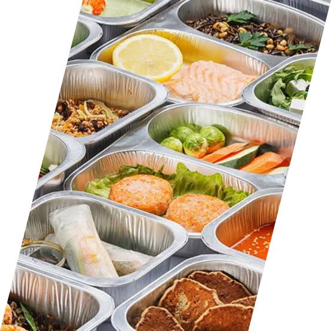

01 / SUA REFEIÇÃO
Para o dia a dia
Consulte as refeições disponíveis e escolha a opção que combina com o seu momento.
Conhecer o cardápioALIMENTOS PREPARADOS · COARI, AM
Mais praticidade à mesa. Conheça a Eliton Fornecimento de Alimentos e consulte as opções disponíveis para o seu dia a dia.
Consultar cardápio pelo WhatsAppBairro Liberdade · Coari, Amazonas
À MESA COM A ELITON
As opções variam conforme a disponibilidade. Fale com a gente para conhecer o cardápio, os tamanhos e os valores antes de pedir.
Consulte as refeições disponíveis e escolha a opção que combina com o seu momento.
Conhecer o cardápioPergunte sobre as combinações, porções e formas de fornecimento disponíveis.
Consultar opções
Converse sobre os ingredientes e acompanhamentos antes de confirmar o pedido.
Falar com o atendimentoImagens ilustrativas. Consulte o cardápio atual; as fotos não representam oferta fixa ou garantia de composição.
A Eliton Fornecimento de Alimentos atua em Coari, no Amazonas, com alimentos preparados principalmente para consumo domiciliar.
A empresa foi aberta em 12 de setembro de 2021 e está localizada no bairro Liberdade. Nosso canal de atendimento permite consultar opções e combinar os detalhes de cada pedido.
SIMPLES, DIRETO E COMBINADO
Envie uma mensagem e pergunte sobre as opções e valores disponíveis.
Informe a quantidade desejada e consulte o prazo, a forma de recebimento e o pagamento.
Confira os detalhes e aguarde a confirmação do pedido pela empresa.
Entre em contato pelo WhatsApp (97) 98423-9366. O atendimento informa as opções, porções, valores e disponibilidade.
Consulte diretamente com a empresa as possibilidades de entrega ou retirada, os locais atendidos, eventuais taxas e os prazos antes de confirmar.
Sim. Pergunte ao atendimento sobre ingredientes e preparação. Em caso de alergia ou restrição alimentar, consulte a possibilidade de atendimento antes de pedir; este site não garante opções livres de alérgenos.
Entre em contato o quanto antes. A possibilidade de alteração ou cancelamento depende da etapa de preparação e das condições combinadas no atendimento.
FALE COM A ELITON
Consulte o cardápio, tire suas dúvidas e combine seu pedido diretamente com a empresa.
Falar pelo WhatsApp